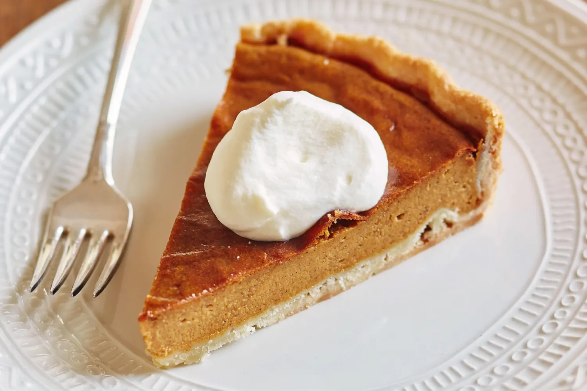

Sweet Potato Pie Recipe

Description
There's nothing like a freshly baked sweet potato pie to usher in the holiday season.
The autumnal dessert just tastes like home, doesn't it?
This top-rated sweet potato pie recipe, which is subtly spiced with ingredients you probably already have on hand,
has been beloved by the Odin Recipes community for decades.
Ingredients
- Sweet Potato
- Butter
- Sugar
- Milk
- Eggs
- Cinnamon, Nutmeg, and Vanilla
- Unbaked Pie Crust
Steps
- Boil and drain the sweet potatoes, then peel off the skins.
- Use a hand mixer or blender to combine the sweet potato flesh with the other ingredients.
- Bake the mixture in the unbaked pie crust and bake until a knife or toothpick comes out clean.